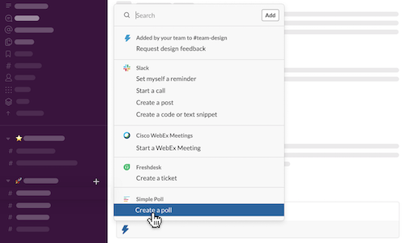
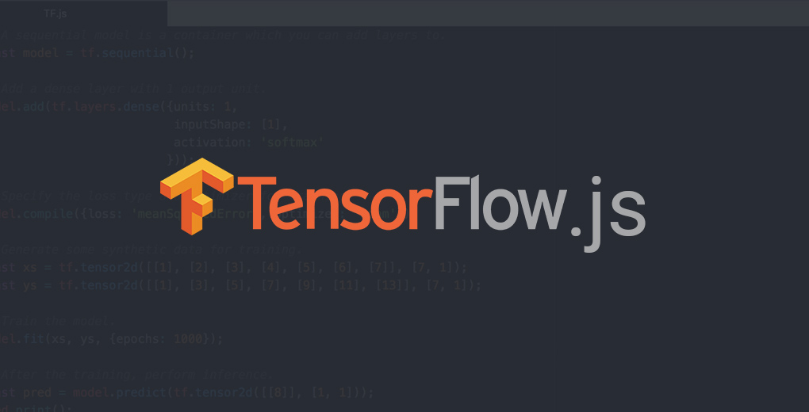
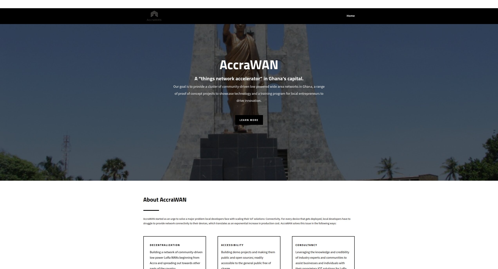

Toronto, ON · melfah.daniel@gmail.com
I have more than seven years of experience managing critical systems and securing high-availability platforms. It began with control systems in an electricity utility. At Viamo, whose voice and SMS services reach 25 million active users in 55 countries, I am the gate on what reaches production, I secure it, and I lead the response when something breaks or is attacked.
Over the past year I have brought that discipline to LLM agents. I designed and built agents that investigate production alarms and deploy and test code unattended, and the constraints they work under: evidence for every claim, hard limits on what they may touch, and a human who signs off. That is where my interest in AI safety comes from.
- Scale. Release and incident lead for a platform serving 25 million active users in 55 countries, running around the clock.
- Security. Led the response to every major security incident on the platform, including phishing and DDoS attacks.
- AI agents in daily use. My agents have handled around 100 tickets and alarms in the past year. My manager and a developer on the team review their output and shape how they work.
- Runs unattended every morning against the QA queue of a production platform. It picks up the tickets waiting for QA, reads each ticket's acceptance criteria and comments, finds the branches and reads the diff.
- Writes a test matrix first: each acceptance criterion mapped to how it will be proven, including what must not happen.
- Runs the tests, then a sabotage check: it reverts the fix and re-runs the new tests. They must fail. Tests that still pass do not test the fix, and the report says so.
- Deploys the branch to the shared test environment. It refuses if someone else used the environment in the last four hours, announces the deploy, and rolls back automatically on any failure.
- Validates on the running system: drives the browser, simulates SMS, USSD and voice calls (including a spoken question to the AI, using synthesised speech), then reads the database back to prove what the server stored.
- Reports pass, fail or partial per criterion. Criteria it could not test are listed as untested, never as passed. It sends me a draft and posts to the ticket only when I say so.
- Hard limits: never production, never a forced deploy, never a real message or call, never sees the test account's password.
- A read-only investigator for production alarms. It first finds what emits the alarm, then gathers evidence across infrastructure code, application code, error tracking, logs and the data warehouse.
- Every claim in its report is marked verified (with the query, file and line, or log excerpt), unverified (with the exact command that would settle it) or refuted (kept in the report with what disproved it).
- A root cause may be stated as fact only with two independent sources of evidence, after an explicit attempt to refute it.
- The agent cannot post or change anything. A separate session checks its claims before a human approves any ticket or message.
- One tries to disprove a change before it is merged: does the test fail when the fix is reverted, does the code exist on the target branch, is the feature off by default?
- The other looks for what a finished change breaks elsewhere and returns a go or no-go with quoted evidence.
- Sign-off is a human decision. Every claim cites evidence or is labelled unverified. Agents never merge, deploy or close a ticket. Approval of one message does not cover the next.
- The rules came from failures I found, such as a test command that exits successfully without running any tests, which an agent would otherwise report as "tests pass".
- Sanitised samples: github.com/Ekow244/agent-guardrails
- Identify and remediate cloud and application security issues on production and on the servers that deliver calls and messages.
- Harden AWS and Kubernetes environments: IAM and least privilege, secrets management, secure networking, container and host hardening.
- Integrated automated security testing into CI/CD pipelines, including static and dynamic application security testing (SAST and DAST).
- Led the response to every major security incident on the platform, including phishing and DDoS attacks.
- Support production services that run around the clock.
Seven years in production reliability and incident response, the last five at Viamo (voice, SMS and AI services across AWS, GCP and OCI). Root-cause analysis means stitching together application logs, error tracking, metrics, call records and warehouse data from systems owned by different teams and vendors.
I designed and built an incident-triage agent that investigates production alarms read-only and keeps an evidence ledger: every claim is verified, unverified or refuted. A root cause needs two independent sources. A separate session checks the agent's claims before a human approves anything. It is in daily use, and my manager and a developer on the team feed back on its reports.
The agent's first step is to find what emitted the alarm, because many "incidents" were artefacts of how a metric was computed. I can bring concrete cases of missing or misleading records to the question of what logs must contain.
Every morning it takes the tickets waiting for QA, maps each acceptance criterion to a test, checks that the new tests fail when the fix is reverted, deploys the branch to a shared test environment with automatic rollback, and validates on the running system with browser automation, simulated SMS and voice calls and database read-back. Untested criteria are reported as untested. It drafts; I decide.
Two adversarial review agents and written constraints: agents never merge to production, force a deploy or sign off, and approval of one message does not cover the next. Sanitised samples.
- Prometheus, Grafana, CloudWatch, Sentry, BigQuery and centralised logging.
- Hands-on DevSecOps: finding and fixing cloud and application security issues, hardening AWS and Kubernetes, and security testing (SAST and DAST) in CI/CD.
- Postgraduate Certificate in Cybersecurity; BSc Computer Engineering, with engineering mathematics, probability and statistics.
- Led the response to security incidents, including phishing and DDoS attacks.
- I build by directing and reviewing AI coding tools: the agents above, a production web platform, and a 16-chapter game with about 240 automated tests. Python and Bash by hand; Git and GitHub daily.
Most interested in building scaffolded LLM agents, prompting, coding with AI tools, collaborative work on GitHub, cybersecurity, first-principles reasoning and long discussions, with a paper as the goal.
.jpg)
- Trusted with what reaches production: I own releases and lead incident response for voice, SMS and AI services used by 25 million people in 55 countries, running around the clock on AWS, GCP, OCI, Kubernetes and Linux.
- Led the response to every major security incident on the platform, including phishing and DDoS attacks.
- Received the Viamo Values Award for delight and impact.
- Designed and built the LLM agents that now triage production alarms and test changes before release.
- Identify and remediate cloud and application security issues on production and on the call and message delivery servers; harden AWS and Kubernetes environments.
- Integrated automated security testing (SAST and DAST) into CI/CD pipelines.
- Built observability with Prometheus, Grafana, CloudWatch and centralised logging; defined service level indicators, objectives and error budgets to decide which reliability work comes first.
- Built automated responses to known failure conditions by correlating metrics, logs and alerts, with human review of every production change.
- Cut annual infrastructure spend from about $30K to $17K by moving workloads to OCI and Graviton instances, and cut monthly GCP spend by about 25%.
- First line of defence for the production platform; promoted to Release Manager after a year.
- Automated infrastructure and operations with Terraform, Ansible, Python, Bash and Jenkins, halving deployment time from about 40 minutes to under 20.
- Reviewed system designs for failure modes before release; wrote the runbooks and troubleshooting guides engineers use during incidents.
- Applied least-privilege access, secrets management and secure networking across cloud infrastructure.
- Worked with PLC programming and SCADA systems in a national electricity utility, where a fault is physical: my grounding in industrial control systems and the security of critical infrastructure.
- Supported AWS environments, Docker and Kubernetes workloads, and incident troubleshooting.
- Open Food Network. Software Development Engineer in Test on an open-source marketplace platform for local food, working with a distributed global team.
- Wrangle. DevOps Engineer.
Designed, built and operate a production web platform with more than 100 registered users, alone: infrastructure, authentication, monitoring, backups, security and incident response.
A 16-chapter branching narrative game about the Atlantic slave trade and its descendants, written in TypeScript with AI coding tools. About 240 automated tests walk every choice path, including tests that enforce content rules (for example, that capture is never framed as the player's failure). Play the first five chapters.
A SCADA and PLC training simulator that runs in the browser: executable ladder logic, PID control, alarms, fault injection and batch records. Demo · Code.
A multi-tenant HIPAA security risk assessment platform, with row-level security in Postgres and an integration test proving that one tenant cannot read or write another's data. Code.

A Slack bot that turned plain-language questions into SQL queries for the platform database (2021).

An embedded system built on a Raspberry Pi, using TensorFlow for object identification.

An air quality sensor network over Accra.
Agent and sub-agent design with Claude Code, prompting, tool permissions, verification gates, human approval steps.
Root-cause analysis, structured and centralised logging, Prometheus, Grafana, CloudWatch, Sentry, BigQuery.
Test design, end-to-end and browser automation (Playwright, Selenium), regression analysis, release engineering.
Vulnerability management, IAM and least privilege, secrets management, container and infrastructure hardening, SAST and DAST in CI/CD. AWS Security Hub, GuardDuty, Inspector, CloudTrail, WAF and Secrets Manager; Nessus, Trivy, Snyk, SonarQube, OWASP ZAP.
AWS, GCP, OCI, Kubernetes, Docker, Linux, Terraform, Ansible, Jenkins.
Python and Bash; TypeScript and PHP codebases. I ship by directing and reviewing AI coding tools.
- Gödel, Escher, Bach: An Eternal Golden Braid by Douglas Hofstadter
- Azazeel by Youssef Ziedan | Sapiens by Yuval Noah Harari
- War and Peace by Leo Tolstoy | The Book of Night Women by Marlon James | Man's Search for Meaning by Viktor Frankl
- Never Let Me Go by Kazuo Ishiguro | Notes from Underground by Fyodor Dostoevsky